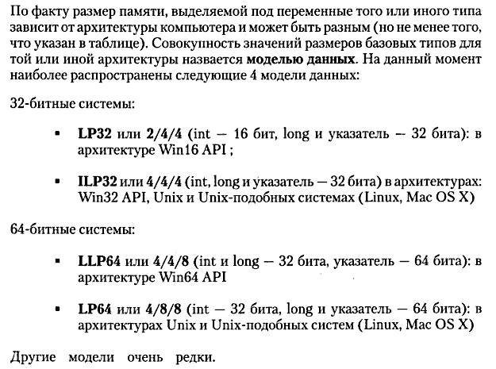
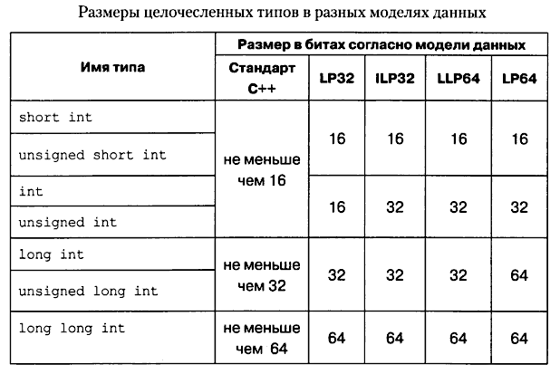

Имеется следующая информация о размерах переменных базовых типов int и long в различных ОС (Windows, Linux, MacOs) и в зависимости от битности данной системы.

То есть, совокупность ОС и ее битности сводится к использованию определенной модели данных. Видно, например, что для Linux 32 bit (x86) и Linux 64 bit (x86-64) размер int не меняется, и составляет 4 байта (32 бита), а вот long меняется с 4 до 8 байт. Поэтому, простая перекомпиляция программы из 32-х битной OC в ОС с архитектурой в 64 bit не решает проблему ограничения беззнакового int значением в 4 миллиарда (4 294 967 295).
Более наглядно эта информация представлена в следующей таблице:
